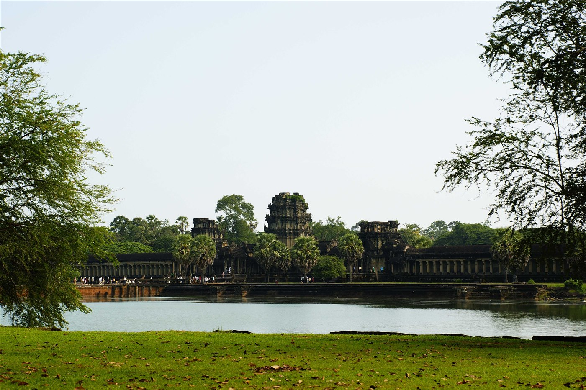
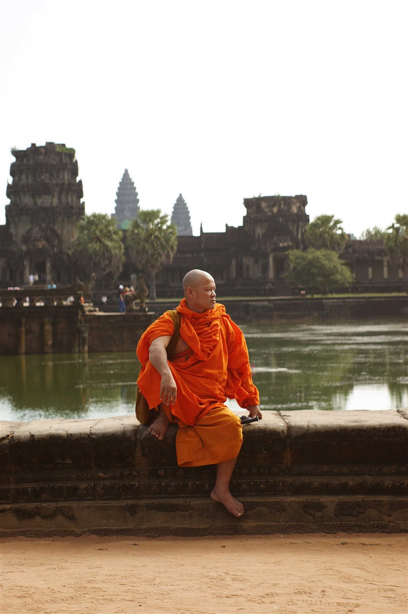
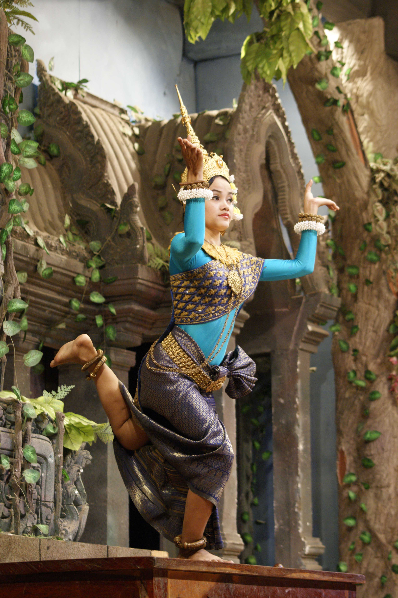
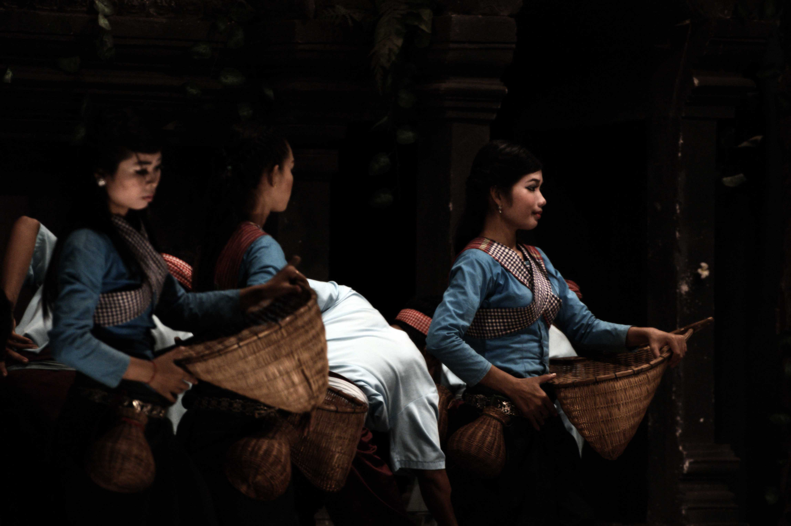

Social events · Cultural gatherings · Sports · School events
Social Events — Germany
AfricanTide fashion show in Germany — proud moments celebrating African culture and design.
African Union Day 2019
Participants from different walks of life and from almost all European and African countries gathered for two days in Dortmund to mark the 56th anniversary of African Unity, celebrated by AfricanTide Union for the 9th time.
Courage Day — November 2019
More than 200 pupils from 23 Dortmund courage schools visited the German Football Museum on Courage Day, exchanging activities against discrimination and for democracy in everyday school life.
Kurfürstenkunst — Recklinghausen
Annual art festival featuring pictures, music, literature and spontaneous creativity. Documented across multiple years: 2016, 2018, and 2019.
Red Bull Sport Events — Oman
Red Bull Cliff Diving World Championships at Wadi Shab, Oman — September 2012. Also covering Young Cars races and traditional boat races at The Wave, Muscat.
Children & Schools Events — Oman
Arab Orphan Day celebrations in Muscat, MIS School closing day and Mother's Day events.
TravelCambodia · 2012
Reportage — Travel Photography
Angkor Wat — The Secrets Revealed
A photographic journey through the ancient Khmer kingdom of Cambodia.
Stone temples swallowed by jungle, monks in saffron robes, stone faces
that have watched centuries pass — 52 carefully selected frames from a
trip that left no angle unseen.
52


0102
Photos 1–2
← → Keys · Swipe · Click page halves
CulturalSiem Reap, Cambodia · 2012
Reportage — Cultural Photography
The Cambodian Queens Dance
At the heart of Khmer heritage lies the Apsara — the celestial dancer
of ancient mythology. Royal court performers in elaborate golden crowns,
layered silk costumes and otherworldly masks enact stories of gods,
warriors and queens on an open-air stage in Siem Reap.
26

0102
Photos 1–2
Swipe · Click page halves · Use buttons
Sub-section
Folk Performance
Cambodian Farmer Dance
A folk performance depicting the life of Khmer farmers — women in blue sampot
costumes carrying wicker harvest baskets, men in red-headband attire enacting
scenes of courtship and harvest against an elaborate Angkor-inspired stage set.
21

0102
Photos 1–2
Swipe · Click page halves · Use buttons
TravelChiang Mai, Thailand · 2011
Reportage — Travel Photography
Long Neck Village — North Thailand
Deep in the hills north of Chiang Mai live the Kayan, Akha, Lahu and
Hmong hill tribes — their traditions woven in brass rings, hand-loomed
textiles and silver headdresses that have adorned their women for
centuries. 26 portraits from a visit in 2011.